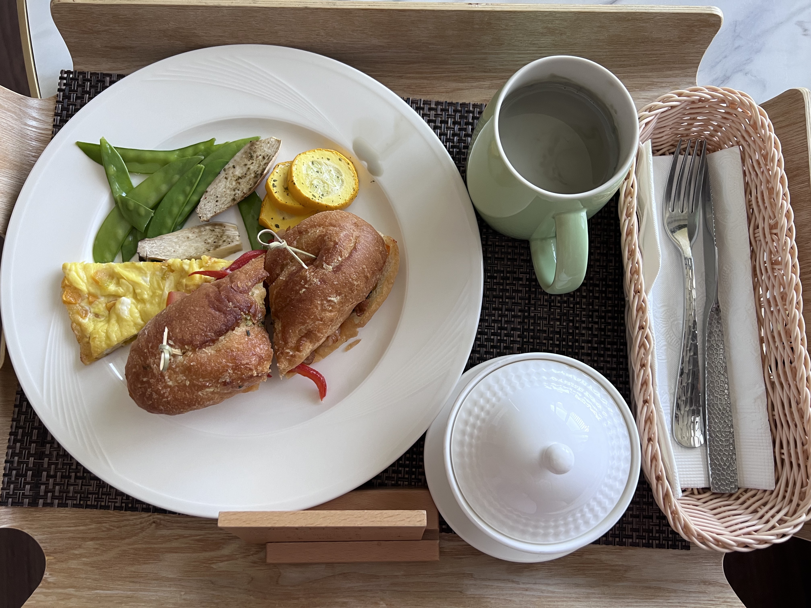
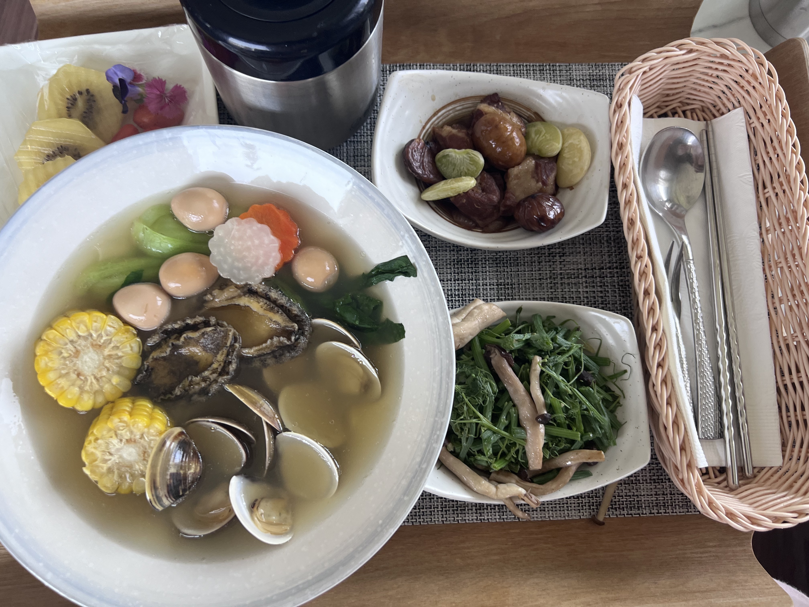
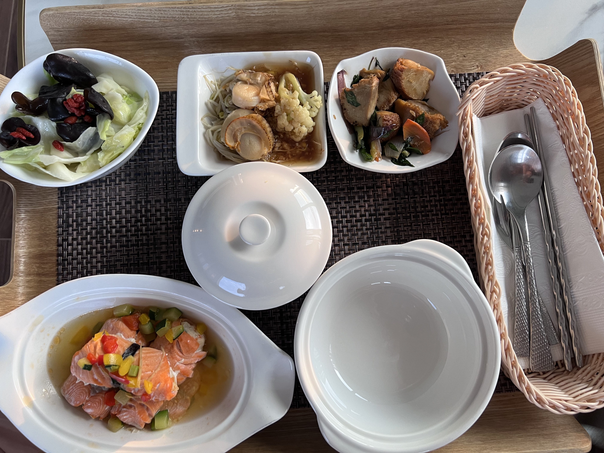
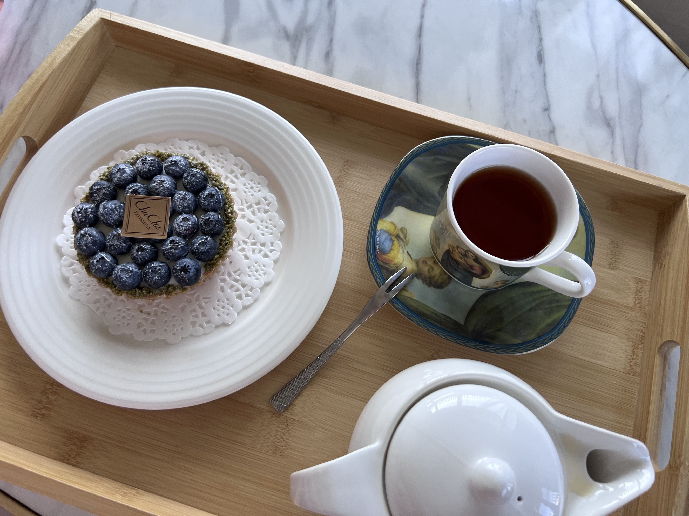
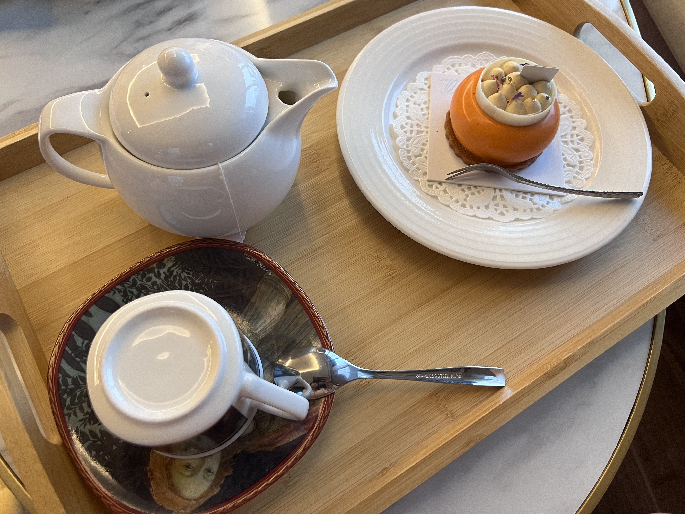
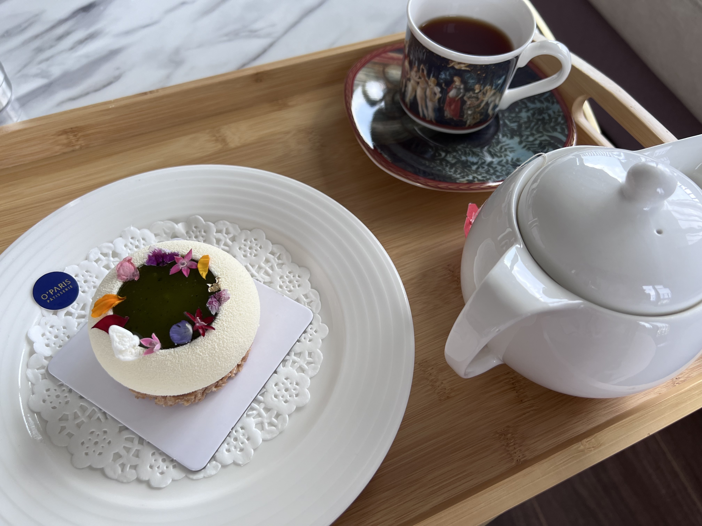
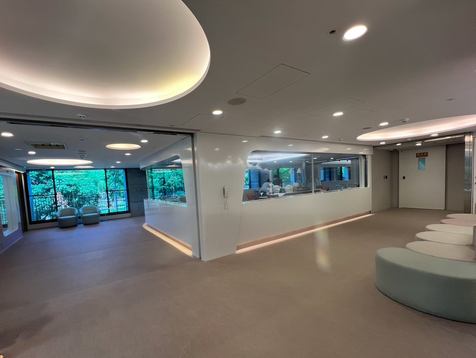
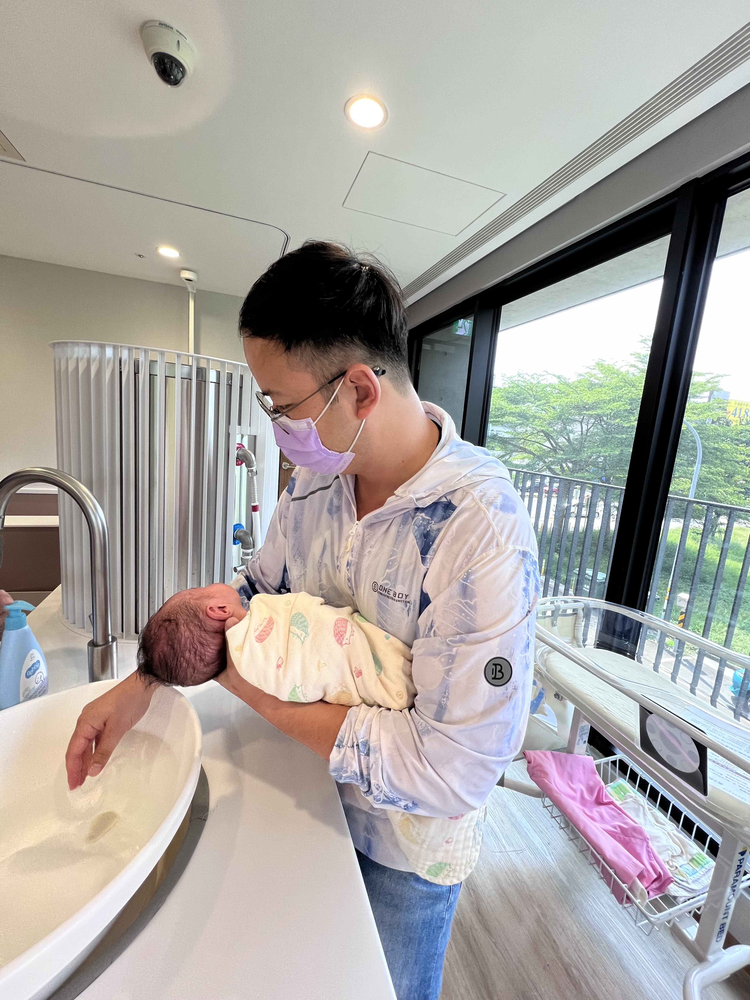

[21天高級月子中心住宿]安寶產後護理之家｜助你溫柔地變爸媽
![[21天高級月子中心住宿]安寶產後護理之家｜助你溫柔地變爸媽](https://nahcy3224.github.io/images/post/baby.jpeg)
有預算就直接選擇產後護理之家
一得知懷孕，我媽就給了我10萬，要我找家月子中心做好月子。我和我老公(簡稱楊)就開始拜訪台南好幾家產後護理中心，最後選擇離安安婦幼醫院(產檢、接生的醫院)距離五分鐘的安寶產後護理之家。
我們選擇產後護理中心考慮點有：
1. 地點
不能離楊上班的地方太遠，也不能離住家太遠，因為楊每天要回家帶狗狗去散步。
2. 月子餐
除了媽媽煮的菜百吃不厭外，同一家餐廳我都很少光顧第二次，喜歡每次吃不一樣的東西，安寶的菜色看起來很豐富又多元，以木質色托盤和白色器皿承裝菜色，隨餐附上當餐的菜單，很喜歡附上菜單這一點，之後出住月中也可把菜單拿來當食譜參考。
早餐，通常是一杯飲品(豆漿、黑芝麻飲)、配上澱粉、蛋白質。有時候也會出現魚湯米粉、海鮮烏龍、干貝粥。 
午餐和晚餐通常配置一主菜一湯一果三小菜，有時候也會有義大利麵、海鮮烏龍、海鮮刀削麵。  
當然也少不了月子餐的特色，每餐少不了的飲料(杜仲茶、黑豆水、養肝茶…)
飯後點心有出現過紅豆薏仁、綠豆沙、清爽的百香愛玉、紫米桂圓、椰奶西米露、雪花糕、桃膠……，很期待吃甜點，最棒的是，每週約有兩次端出台南知名甜點店的甜點。例如：
ChuChu Pâtisserie 啾啾法式甜點 - 藍莓塔

El Olor 法式甜點 - 熱帶水果牛奶巧克力

O’PARIS法式甜點 - 杜樂麗花園

3. 寶寶照護
透明、24hr不打烊、一個寶寶一顆視訊鏡頭的嬰兒室，可透過手機遠端連線看到寶寶。讓爸爸在上班休息時，也可遠端看看寶寶，非常符合楊的需求。

楊參觀安寶，聽完餐點和嬰兒室，獨排眾議地堅持選擇安寶，即使安寶超出我們原先的預算。
實際體驗後，不管是設施和館內員工(護理師、生活秘書、櫃檯)都令人超乎期待！
1. 母嬰同室 - on call 的寶寶
安寶的母嬰同室是 on call 的，隨 call 隨母嬰同室。
護理師也會應爸媽的需求，進來房間教導親餵、擠奶、寶寶護理、安撫寶寶……等。
在充滿完善的備品下，學習照護寶寶，著實令人心安不少。
在月中這段期間，觀察月中的配置和備品品牌，然後檢視家裡環境可以怎麼優化，是否需要添購其他商品，讓育兒之路更加順利。

母嬰同室時房間的燈會變紫色的，圖示也會亮起。
2. 中醫師看診 - 調整身體無煩惱
生產後醫生有開軟便劑，不然會陰疼痛，便便又乾硬，更是雪上加霜。
進到月子中心這段期間，便便是有生以來最順利的。
多虧月子餐纖維的補充以及中醫的調整，每天都順暢，也不用依賴軟便劑的幫忙。
3. 團體衛教、瑜珈課 - 一起學習當爸媽
學習幫寶寶洗澡、如何製作副食品、如何讀懂寶寶的哭鬧，親切的衛教師清楚傳遞課程內容，一點一滴建立當爸媽的信心。

除此之外，在硬體設施方面，安寶都幫你想到了，有下列這些法寶，坐月子舒適度倍增：
-
免治馬桶
產後會陰部腫脹，每次大號完擦屁屁都是一種折磨。有免治馬桶的發明免除屁屁的摩擦痛，現代人可以享受這些發明真的好幸福。
-
浴缸
可以舒服、安全的進行坐浴。
-
浴室的暖氣
暖氣開起來，也不怕洗頭洗澡會冷到。
-
辦公的桌椅
媽媽坐月子，爸爸賺尿布錢，有空間辦公，兼顧爸爸的需求。
-
舒適的哺乳椅
一張舒適哺乳椅子，接住哺乳的媽媽，堅持喂母奶這條路。